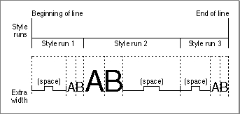

Legacy Document
Important: The information in this document is obsolete and should not be used for new development.
Important: The information in this document is obsolete and should not be used for new development.


Text Formatting and Justification
When you lay out text, you can change its width and its alignment. You change the width of text to format it for special purposes, or to justify the text to fit a display area or a given line. To justify text, you spread or condensed it so that any white space is distributed evenly throughout the display area or line.You can draw text that is aligned with either the right margin of the display area or line, which produces ragged-left text, or the left margin, which produces ragged-right text. You align text by positioning the pen appropriately so that the first glyph of the text line is flush against the margin.
There are several ways to change the width of text. You can
You can even justify text that includes special formatting. For example, you can extend or condense the width of space and nonspace characters, while justifying the text line overall.
- use the QuickDraw justification routines that measure and draw text, automatically changing the width of the text appropriately for each script system
- set the graphics port
txFacefield to condense or extend the text- set the graphics port
spExtraandchExtrafields to narrow or widen space and nonspace characters by a specific number of pixels
Of these methods, the easiest way to justify text for all script systems is to use the QuickDraw justification routines. These routines handle the script system requirements for your application. For example, because the text of some script systems, such as Arabic and Devanagari, is drawn as connected glyphs, the justification routines do not add width to or remove it from nonspace characters.
The justification routines assume that a slop value specified in pixels is to be distributed throughout the text. The slop value is the difference between the width of the text and the width of the display area or line. You can pass the justification routines a positive or negative slop value. To extend text to fit the display area or line, you specify a positive slop value. To justify a line of text more smoothly by condensing it when it only slightly exceeds the display area or line length, you can use a negative slop value.
How the justification routines distribute this extra space within a style run depends on the script system.
Figure 3-4 shows a line of text in the Roman script system containing three style runs and how extra space is distributed among the space characters within a style run.
- For Roman script systems, text justification is performed by altering the size of the space characters. You can think of this as interword spacing. (Every space in a style run is allocated the same amount of extra width and thus is the same size, whether or not it is at the beginning or end of the line or the style run.)
- For Arabic, the justification routines insert extension bar glyphs between joined glyphs and widen space characters to fill any remaining gaps.
- For scripts that don't use spaces to delimit words, these routines usually modify the intercharacter spacing to achieve justification.
Figure 3-4 Justification of Roman text
 To correctly handle spacing between multiple style runs on a line, the justification routines take a parameter that specifies the position of the style run on the line. The style run position parameter is meaningful only for those script systems that use intercharacter spacing for justification. For all other script systems, the parameter exists for future extensibility. Although the style run position parameter is not used, for example, for justifying text in the Roman script system, to allow for future compatibility, you should always specify the appropriate value for it for all calls that take it.
For those script systems that do use intercharacter spacing, space between styles is allocated differently depending upon whether the style is leftmost, rightmost, or between two other style runs. For example, if a style run occurs at the beginning or end of a line, extra space is not added to the outer edge of the outermost glyph, whereas if a style run is interior to a line, all of the glyphs of the text are treated the same: extra space is allocated to both sides of every glyph including those at either end of the style run.
If you do not want to justify a range of text, you can change the width of the text for onscreen display, for example, to format an advertisement by setting the graphics port
- Note
- The text justification routines do not automatically eliminate trailing spaces from the last style run on the line. However, QuickDraw provides a routine (
VisibleLength) that does not include trailing spaces in the byte count of the last style run on the line.
spExtraandchExtrafields to an amount by which space and nonspace characters are to be widened or narrowed. If you useSpaceExtraandCharExtrato widen or narrow text, you are responsible for handling them properly for the script system.The original graphics port does not have a
chExtrafield, so you can only change the width of nonspace characters if you use a color graphics port. Although line breaks are maintained, spacing defined by these values is not preserved when you print to a LaserWriter printer.